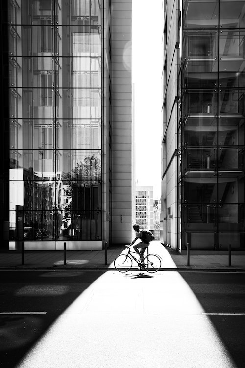

-

All who cycle are my friends
2020.4.27
A rider from Stockholm interviewed for an article about the phenomenon notes that riding a bike imparts a feeling of freedom to the rider…
-
Swedish riders and enthusiasts
2020.3.11
There are also several bicycle clubs throughout Sweden with a fixed-gear niche. Komet Club Rouler is a club based in Gothenburg, annually arranging Svart Kat…
-

The Australian fixie culture
2020.2.29
Online stores in Australia ship partially-assembled bikes directly to consumers, considerably undercutting prices at typical brick and mortar stores…